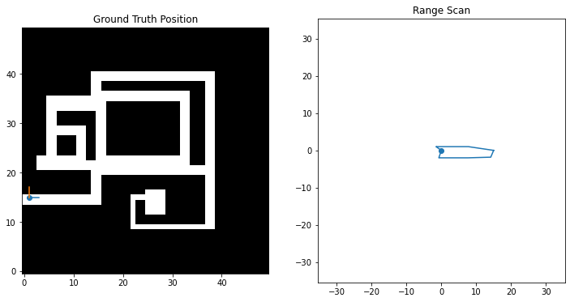
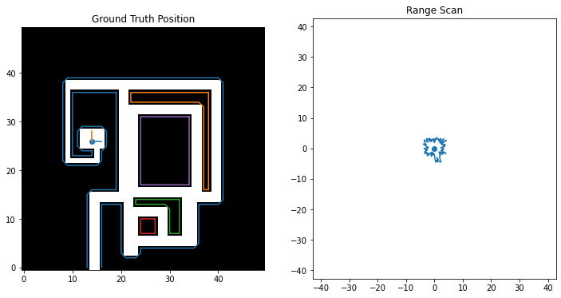
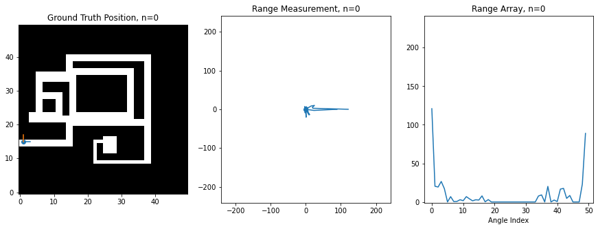
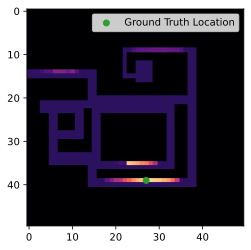
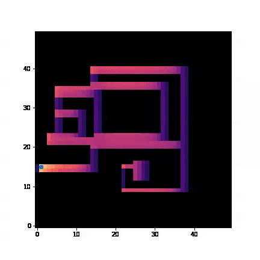

Assignment 4: Bayesian Robot Localization (40 Points)
Chris Tralie
-
Programming Tasks
- Getting Started
- Task 1: Sensor Model (5 Points)
- Task 2: Online Position Tracking (15 Points)
- Task 3: The Viterbi Algorithm (15 Points)
- Task 4: Make Your Own Map (5 Points)
The purpose of this assignment is to track a robot through an environment from noisy measurements using Bayesian algorithms from "Hidden Markov Models (HMMs)." In this case, the hidden states are the position of a robot in 2D, and the observations are omnidirectional range scans. This is an idealized model of a real "LIDAR scanner" such as the Hokuyo URG-04LX laser range scanner, which is able to sweep a laser in a 270 degree field of view in front of it

For this assignment, I've created a synthetic robot that can move right/left/up/down on a 2D grid, and which is always oriented the same way. Below is an image of this robot moving around. The ground truth position of the robot (the hidden state) is shown on the left on a map of the environment, while the laser scan (observation) is shown on the right
Noise Model
The above is an idealized example, however, because the scan is rarely this perfect. Usually there is noise that perturbs the true range measurements; that is, we end up measuring that a wall is either closer or further than it actually is at a particular angle. We'll model the noise here as a multiplicative Gaussian; that is, if the ground truth range is r, then the observed range m(r) is
\[ m(r) = r(1 + \alpha n)\]
where n is a "standard Gaussian distributed" random variable with distribution
\[ n \sim \frac{1}{\sqrt{2 \pi}} e^{-n^2/2} \]
and α is some parameter set ahead of time. In other words, the further away the measurement is, the more it can be perturbed. Below is the code I used to sample from this noise model, taking advantage of numpy's built in randn method for sampling random variables from the standard Gaussian
Below is an example where α = 0.1
Below is an example where α = 4
At this level of noise, it seems like we're hardly getting any useful information. However, amazingly, if you use the above sensor model and assume that the robot is equally likely to visit any of its neighbors, then you can actually recover an excellent estimate of the robot's trajectory using the Viterbi algorithm. Below is a plot of the original trajectory next to what the algorithm recovered here (NOTE: results may vary based on the noise samples):

The estimated trajectory is perfect in this example! This is the power of sequence modeling; even if our measurements are total crap at a particular instant in time, if they have even a little bit of signal, then we can "boost" the signal strength by looking at many states in sequence.
Programming Tasks
Getting Started
Click here to download the starter code for the assignment. Before you run any code, make sure that you have scikit-image installed in your python environment by typing the following at the top of a Jupyter notebook
Then, setup a Jupyter notebook that imports the simulation engine, which you can start off like this:
Below is some code you can use to initialize a world and to simulate the scans of a trajectory through that world
Next, you'll need to figure out what perfect observations look like at each grid cell in the world so you can figure out the probability that you observed a scan given that you were at a particular cell. There are N open grid cells in the world indexed from 0 to N-1, and the robot can be at any one of them at any time. The method get_state_scans(res) of the Environment class returns an array perfect scans from each of these locations.
Finally, there's a list member variable env.neighbors, where env.neighbors[i] lists the indices of the neighbors of state i.
Task 1: Sensor Model (5 Points)
The first step in gathering all of the components that are needed for an HMM is to come up with probabilities in a measurement model. Let's let ri be the perfect range measurement of the ith angle at a particular location, and let xi be the corresponding measurement at that angle, sampled according to the model above. Then the probability density of the measured range xi in terms of ri is
\[ p(x_i | r_i) = \frac{1}{\sqrt{2 \pi }(\alpha r_i + \gamma)} e^{-\frac{(x_i-r_i)^2}{2 (\alpha r_i + \gamma)^2}} \]
where γ is a small number to prevent numerical divide by 0 for ranges that are too closes or noise that is too small. In this assignment, we'll let γ = 0.1. Notice how based on the denominator of the exponent, ranges which are further have a higher probability density for the same deviation. This is another way of seeing that the noise is worse for large distances.
Assuming that the angles are all independent of each other, the joint probability of all of the angles in a single scan can be written as the product of all such probabilities at each angle.
Your Task: Create a method that takes in a ground truth scan array, a measured scan array, and the noise value α, and which returns the probability density that a set of measured angles jointly occurred at a particular location. For example, let's say you called this method get_measurement_prob and you ran the initialization sequence above with α=0.1. Then running the following cell
Should generate the following plot
The brighter the cell, the higher the probability is relative to cells at other locations. You'll notice here that for this particular location (shown in green), it has a high probability around the true location, but it also has a high probability in similarly shaped narrow horizontal hallways. As you will see in the tasks below, this kind of confusion can get resolved by tracking measurements over time.
Task 2: Online Position Tracking (15 Points)
You now have all of the ingredients you need to do an online tracking of the robot positions as new measurements come in! You can assume the following two things:
- The robot is equally likely to transition to any of its neighbors (which, as you recall, you can look up in
env.neighbors) - The robot is equally likely to start at any position on the grid
To look at the results, it's helpful to plot the probabilities as you're filtering over time. Matplotlib has some good built in tools to help with this. Assuming that you have a list or numpy array called probs that holds the filtered probabilities of each cell at time n, here's how you would make a video of your filtering results
If you've done this properly, here's what you should see on the trajectory example we've been looking at with α=4 (the actual position is shown as a blue dot, while the maximum probability is shown as a X)
You'll notice some cool things here, how the probability is distributed over all of the cells at first, but how it quickly hones in on the actual location of the robot. You'll also see it hedging its bets between different long and narrow hallways when it happens to be in one, but as soon as it turns a corner or passes a fork in the road, the ambiguity is resolved.
Here's another neat example where you see it gets very confused and estimates it's at the top row instead of the second to the bottom row for a while because of how similar all of the hallways look. The ambiguity is mostly resolved once the robot turns the corner
Task 3: The Viterbi Algorithm (15 Points)
As you can see, filtering can get confused at individual steps, and we know if we can do things offline (i.e. we have access to all measurements over time), we can maximize the joint probability over the whole trajectory using the Viterbi algorithm. This will fix things up so the trajectory doesn't jitter around as much locally, since it enforces consistency of the whole trajectory.
Your task: Implement the Viterbi algorithm to compute an optimal sequence of state indices given an array of measurements. Make a separate notebook to show this to keep organized. Since you'll be accumulating over many states, be sure to add log likelihoods, as explained in the notes rather than multiplying probabilities.
Let's say your Viterbi code outputs a list of state indices called states. Then the following code will extract and plot the coordinates of the trajectory you estimated on top of the "ground truth" (correct) trajectory
First try to make sure you can handle the case where α = 0.1, then crank up the noise and see how much noise the algorithm can take and still give a good result. If your code works properly, you should get perfect results with α=4 on Maze1.png
You should also get nearly perfect results with α = 4 for the trajectory on the second map

Task 4: Make Your Own Map (5 Points)
Make your own map and trajectory on it and show the results of filtering! You can use a program like MS paint, gimp, or photoshop. The map should be all black except for where, such as the example maze that was given. We'll make a class gallery
{kind=link}
For The Bored...
If you finish this early, here are a few things you can try
- In addition to modeling the position, allow the robot to rotate. How would you change your state space? How would you update your observations to handle a rotation?
- The above is going to blow up the state space in memory. Think of how you could use a particle filter to address this.
- Think about how you might store some "second order" information about where the robot has been like velocity. If we assume the law of inertia, the robot is more likely to continue moving in the direction of its velocity than it is to make a sudden turn, so you can use non-uniform transition probabilities to neighbors.